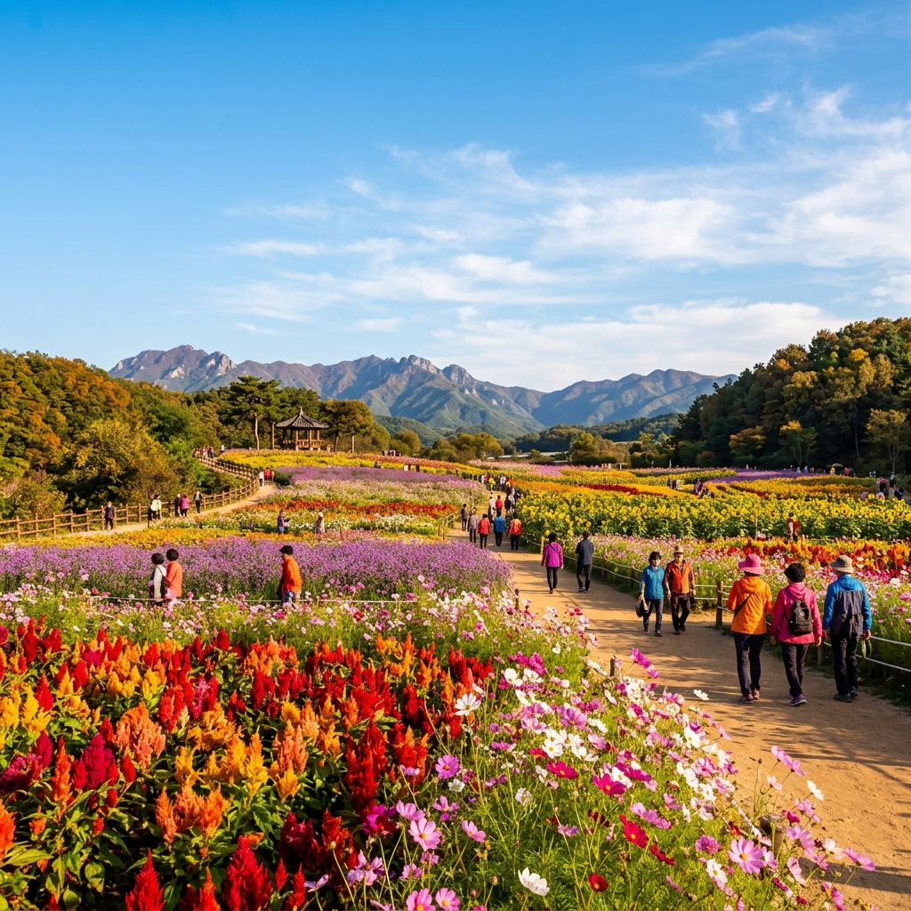
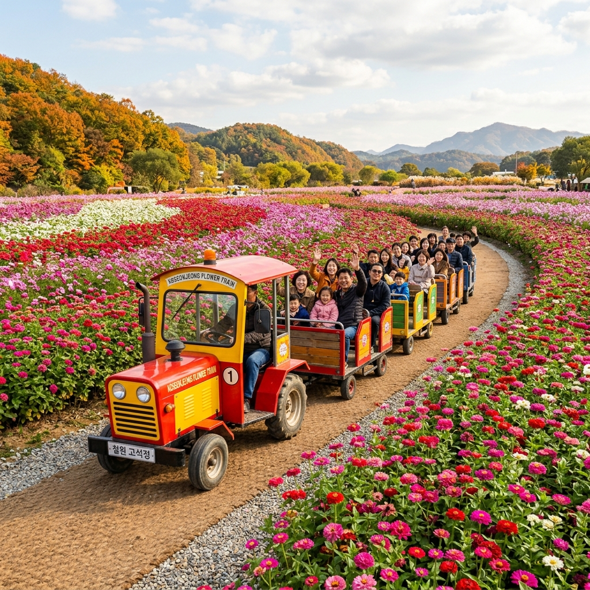
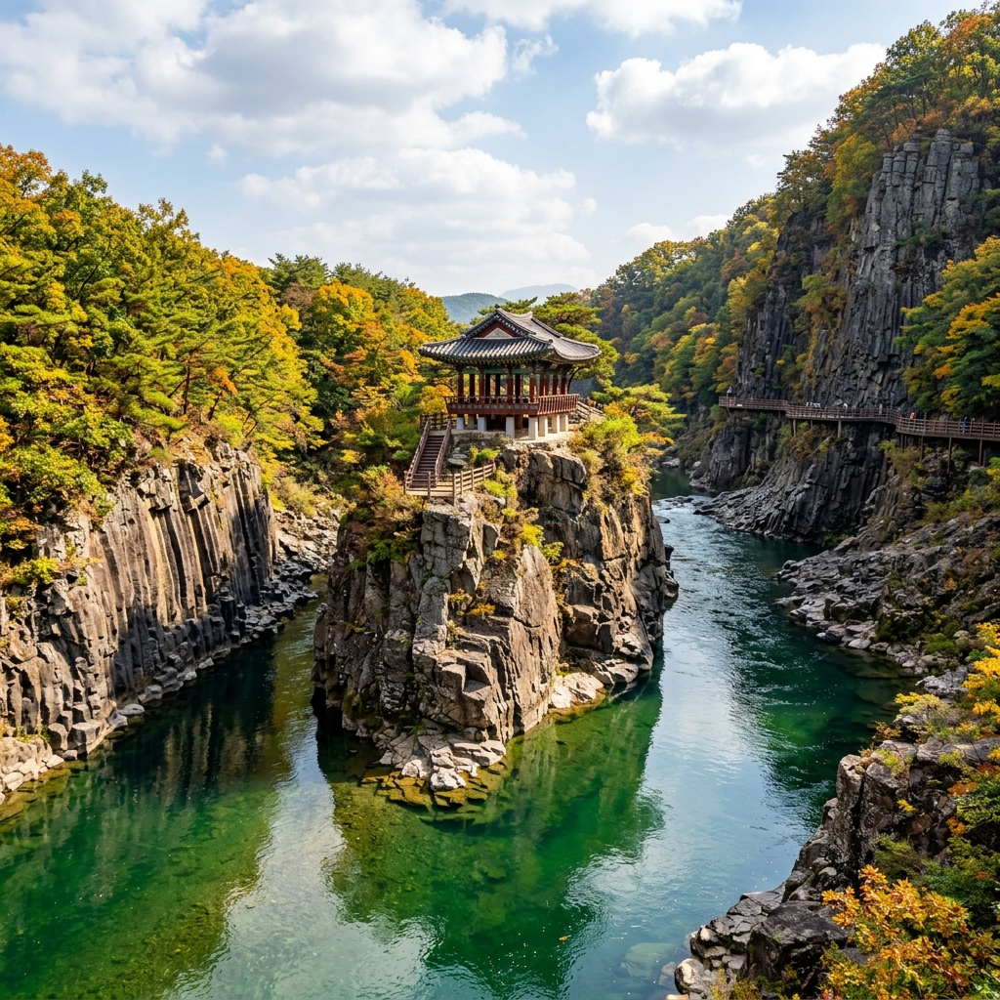

철원 고석정 꽃밭 가을 꽃 페스타 나들이 코스 — 입장료 할인 환급과 셔틀버스·한탄강 연계 체크리스트
가을의 문턱에서 강원도 철원의 고석정 꽃밭은 24만㎡에 달하는 광활한 들판을 촛불맨드라미, 백일홍, 천일홍, 코스모스, 핑크뮬리, 버베나 등 다채로운 가을꽃으로 가득 채우며 황홀한 장관을 연출합니다.
2026년 철원 고석정 꽃밭 가을 꽃 페스타는 성인 10,000원의 입장료 중 5,000원을 지역화폐인 철원사랑상품권으로 즉시 돌려주어 실질적인 반값 관람 혜택을 제공하며, 축제장 내 매점 및 철원 전역의 식당·카페에서 유용하게 사용할 수 있습니다.
넓은 부지를 편안하게 둘러볼 수 있는 깡통열차 탑승 요령부터 주말 주차난을 피하는 임시주차장 무료 셔틀버스 환승법, 한탄강 주상절리길 잔도와의 당일치기 연계 동선까지 방문 전 꼭 알아두어야 할 실전 여행 팁을 완벽히 정리해 드립니다.

철원 고석정 꽃밭 가을 꽃 페스타의 형형색색 꽃물결 / AI 제작 이미지
01 | 철원 고석정 꽃밭 가을 개화 현황과 2026 축제 일정 핵심 요약
철원 고석정 꽃밭은 과거 군사 훈련지로 방치되었던 유휴지를 철원군과 주민들이 힘을 모아 사계절 꽃이 피어나는 평화의 정원으로 탈바꿈시킨 대한민국 대표 가을 명소입니다.
축구장 약 33개 크기인 24만㎡ 면적에 계절마다 새로운 테마로 꽃을 심어 가꾸며, 가을 시즌에는 8월 하순부터 꽃망울을 터뜨리기 시작해 9월 중하순부터 10월 중순까지 절정의 개화 상태를 유지합니다.
2026년 가을 페스타는 9월 초 정식 개장하여 10월 말까지 운영되며, 오전 9시부터 오후 6시까지 입장이 가능하고 매표 마감은 관람 종료 1시간 전인 오후 5시까지 진행됩니다.
매주 화요일은 꽃밭 정비 및 잔디 생육 관리를 위해 정기 휴무일로 지정되어 있으므로, 헛걸음하지 않도록 방문 요일을 사전에 확인하는 것이 필수적입니다.
낮 시간대에는 눈부신 가을 햇살 아래 형형색색의 꽃밭을 조망할 수 있으며, 10월 초부터는 서늘한 가을바람과 함께 핑크뮬리와 억새가 은빛 물결을 이루어 감성적인 풍경을 자아냅니다.
도심의 인공적인 테마파크와 달리 드넓은 자연 구릉지를 배경으로 시야가 막힘없이 트여 있어 남녀노소 누구나 편안하게 걸으며 가을 정취를 만끽할 수 있는 최고의 힐링 여행지입니다.
02 | 고석정 꽃밭 입장료 요금 체계와 철원사랑상품권 50% 환급 활용법
고석정 꽃밭의 가장 큰 장점 중 하나는 입장료의 50%를 지역 소비 쿠폰인 철원사랑상품권으로 현장에서 즉시 돌려주는 착한 요금 정책입니다.
개인 기준 성인 입장료는 10,000원이지만 결제 즉시 지류형 철원사랑상품권 5,000원권을 매표소에서 교부받으므로 실제 체감 관람 비용은 5,000원에 불과합니다.
청소년(중·고등학생)은 4,000원(상품권 2,000원 환급), 어린이(초등학생)는 3,000원(상품권 1,000원 환급)으로 가족 단위 방문객도 부담 없이 즐길 수 있도록 세분화되어 있습니다.
철원군민, 만 6세 미만 미취학 아동, 국가유공자, 장애인(중증 동반 1인 포함)은 신분증이나 증빙 서류를 지참하면 전액 무료로 입장할 수 있습니다.
| 구분 |
입장 요금 |
철원사랑상품권 환급액 |
실질 체감 요금 |
비고 (증빙 필요) |
| 성인 (만 19세~64세) |
10,000원 |
5,000원권 1매 |
5,000원 |
일반 개인 기준 |
| 청소년 (만 13세~18세) |
4,000원 |
2,000원권 1매 |
2,000원 |
학생증 또는 청소년증 |
| 어린이 (만 7세~12세) |
3,000원 |
1,000원권 1매 |
2,000원 |
초등학생 또는 주민등록등본 |
| 무료 대상자 |
0원 |
미지급 |
0원 |
만 6세 미만, 철원군민, 국가유공자 |
환급받은 철원사랑상품권은 꽃밭 행사장 내부의 농특산물 판매 부스와 먹거리 장터는 물론, 고석정 관광지 주변의 오대쌀 밥집, 막국수 전문점, 편의점, 주유소 등 철원 관내 모든 가맹점에서 현금처럼 사용할 수 있습니다.
상품권의 권면 금액 70% 이상 사용 시 잔액은 현금으로 거슬러 받을 수 있으므로 여행 경비 절감에 매우 실질적인 도움이 됩니다.
03 | 24만㎡ 대단지 꽃밭 테마별 구역 안내와 인생샷 포토스팟
고석정 꽃밭은 중앙 광장을 중심으로 방사형 산책로가 조성되어 있으며, 각 구역마다 단일 품종의 대규모 군락지가 형성되어 있어 발길 닿는 곳마다 색다른 매력을 선사합니다.
가장 시선을 사로잡는 구역은 붉은색, 노란색, 주황색 촛불맨드라미가 질서정연하게 물결치는 테마존으로, 멀리서 보면 화려한 무지개 카펫을 펼쳐놓은 듯한 압도적인 시각적 감동을 줍니다.
보랏빛 버베나 군락지는 유럽의 프로방스 라벤더 밭을 연상시키며, 역광으로 비치는 오후 3~4시경에 인물 사진을 촬영하면 동화 속 한 장면 같은 부드러운 분위기를 연출할 수 있습니다.
가을의 대명사인 코스모스와 황화코스모스 밭은 어른 키 높이까지 자라나 꽃길 한가운데 서 있는 것만으로도 자연스러운 프레임이 완성되어 인생샷을 남기기에 최적입니다.

넓은 꽃밭을 편안하게 순환하는 깡통열차 운행 풍경 / AI 제작 이미지
바람에 은은하게 흔들리는 핑크뮬리와 댑싸리(코키아) 구역은 10월로 접어들수록 붉은빛이 짙어져 감성 사진을 찍으려는 연인과 여행자들에게 가장 인기 있는 포인트입니다.
꽃밭 곳곳에는 풍차, 어린 왕자 조형물, 액자 프레임 포토존, 하얀 피아노 등 다채로운 설치물이 배치되어 있어 소소한 재미를 더해줍니다.
넓은 평지를 걷다 보면 그늘이 부족할 수 있으므로, 입구 대여소에서 제공하는 알록달록한 무료 양산을 하나씩 들고 산책하면 햇빛 차단은 물론 사진 촬영 소품으로도 훌륭하게 활용할 수 있습니다.
04 | 깡통열차 탑승 요금과 운행 코스, 대기 시간 단축 꿀팁
24만㎡의 드넓은 꽃밭을 걸어서 전부 돌아보려면 최소 1시간 30분에서 2시간 이상 소요되므로, 노약자나 어린이를 동반한 가족 여행객에게는 '깡통열차' 탑승을 적극 추천합니다.
소형 트랙터가 드럼통을 개조해 만든 알록달록한 객차들을 줄줄이 연결하여 끄는 깡통열차는 꽃밭 외곽과 주요 군락지 사이를 시원한 바람을 가르며 달리는 인기 체험 시설입니다.
탑승 요금은 1인당 5,000원(대소인 공통)이며, 환급받은 철원사랑상품권으로도 결제가 가능하여 추가 현금 지출 없이 즐기기에 안성맞춤입니다.
운행 시간은 약 15분 정도로 꽃밭 전경을 빠르게 조망하며 전체적인 동선을 파악할 수 있어, 입장 직후 깡통열차를 먼저 타고 한 바퀴 둘러본 뒤 마음에 드는 구역을 걸어서 다시 찾아가는 방법이 효율적입니다.
주말과 공휴일 오후에는 탑승 대기 줄이 길어져 30분에서 1시간 이상 기다려야 할 수 있으므로, 오전 10시 이전이나 점심시간 직후인 12시 30분 무렵에 매표소로 이동해 탑승권을 미리 확보하는 것이 좋습니다.
곡선 코스를 돌 때 원심력으로 객차가 살짝 흔들리며 전해지는 유쾌한 스릴은 아이들은 물론 어른들에게도 특별한 추억을 선물합니다.
05 | 주차장 위치별 혼잡도 비교와 무료 셔틀버스 환승 동선
고석정 꽃밭은 가을 축제 기간 주말마다 전국에서 수만 명의 인파가 몰려 주차장 진입로에서 극심한 정체가 발생할 수 있습니다.
행사장 바로 앞 제1주차장(꽃밭 전용 주차장)은 무료로 운영되지만 주말 오전 10시 30분을 넘기면 만차 상태가 되며, 도로변 대기 행렬이 1km 이상 길어집니다.
주차 스트레스를 줄이려면 인근 고석정 국민관광지 주차장(소형 2,000원 일일 정액)이나 철원종합운동장 임시주차장을 이용하는 것이 훨씬 현명합니다.
철원군에서는 주말 및 공휴일마다 고석정 관광지 주차장 및 임시주차장과 꽃밭 정문을 10~15분 간격으로 순환하는 무료 셔틀버스를 집중 배차하고 있습니다.
🚗 주말 고석정 꽃밭 쾌속 주차 및 환승 요령
1. 오전 9시 30분 이전 도착 시 : 행사장 정문 맞은편 '꽃밭 제1주차장(무료)'으로 직접 진입하여 바로 주차.
2. 오전 10시 30분 이후 도착 시 : 진입로 정체 발견 즉시 유턴하여 '고석정 국민관광지 주차장' 또는 '임시주차장'으로 우회.
3. 무료 셔틀버스 탑승 : 고석정 관광지 매표소 앞 정류장에서 꽃밭 행 셔틀버스 탑승 (이동 소요시간 약 3~5분).
4. 귀가 시 역환승 : 꽃밭 출구 셔틀버스 승강장에서 동일 노선을 타고 주차장으로 복귀.
꽃밭 관람 후 고석정 정자와 한탄강 래프팅 코스를 연계해 둘러볼 계획이라면 처음부터 고석정 국민관광지에 주차하고 셔틀버스를 이용하는 동선이 동선 낭비를 줄이는 가장 완벽한 방법입니다.
06 | 한탄강 주상절리길 잔도·고석정 국민관광지 연계 당일치기 코스
철원까지 이동했다면 고석정 꽃밭만 보고 돌아오기에는 아쉬움이 큽니다. 철원의 유네스코 세계지질공원 지형을 한눈에 담을 수 있는 연계 관광 명소를 묶어 당일치기 알짜 코스를 완성할 수 있습니다.
첫 번째 추천 연계지는 바로 옆에 위치한 고석정 국민관광지입니다. 신라 진평왕 때 세워진 정자와 한탄강 한가운데 10m 높이로 우뚝 솟은 고석암 바위가 빚어내는 풍경은 철원 9경 중 으뜸으로 꼽힙니다.
이곳에서는 한탄강 통통배(유람선, 대인 6,600원)를 타고 협곡 바위 사이를 누비며 주상절리의 신비로운 단면을 바로 눈앞에서 관찰할 수 있습니다.
두 번째 필수 연계지는 차로 10분 거리에 있는 '한탄강 주상절리길(잔도)'입니다. 절벽 허공에 매달린 3.6km 길이의 잔도 데크길을 걸으며 아찔한 협곡 비경과 출렁다리를 체험할 수 있습니다.

고석정 국민관광지와 웅장한 한탄강 현무암 협곡 / AI 제작 이미지
주상절리길 역시 성인 입장료 10,000원 중 5,000원을 철원사랑상품권으로 돌려주므로, 꽃밭에서 받은 상품권과 합치면 1인당 10,000원의 상품권을 확보할 수 있어 점심 식사비로 요긴하게 쓰입니다.
시간 여유가 있다면 한국의 나이아가라로 불리는 직탕폭포와 궁예의 태봉국 전설이 깃든 송대소 주상절리 은하수교까지 함께 둘러보는 드라이브 코스를 추천합니다.
07 | 철원사랑상품권 사용 가능한 고석정 인근 식당과 카페 가이드
꽃밭과 잔도길에서 환급받은 철원사랑상품권은 지역 경제 활성화를 위해 관내 대다수 일반 음식점과 카페에서 편리하게 수납됩니다.
고석정 관광지 입구 먹거리 골목에는 기름진 흙과 일교차로 밥맛이 뛰어나기로 유명한 '철원 오대쌀'로 갓 지은 솥밥과 제철 나물, 더덕구이를 내놓는 쌈밥 정식집들이 밀집해 있습니다.
가을철 별미로는 시원한 메밀 향이 일품인 동치미 막국수와 편육 세트가 인기이며, 쌀쌀한 날씨에는 뜨끈하고 구수한 어탕국수나 민물매운탕 전문점을 찾는 발길도 이어집니다.
식사 후에는 한탄강 절벽이 내려다보이는 리버뷰 대형 베이커리 카페에 들러 상품권으로 커피와 쌀 디저트를 맛보며 여유로운 티타임을 가질 수 있습니다.
만약 음식점에서 상품권을 전부 사용하지 못했다면, 행사장 출구 농산물 직판장에서 철원 햅쌀 4kg·10kg 포대나 고추냉이, 파프리카, 오대쌀 식혜 등 지역 특산품을 구매하는 것도 훌륭한 방법입니다.
08 | 가을철 큰 일교차 대비 옷차림과 편의시설 이용 안내
강원도 내륙 북단에 자리 잡은 철원은 서울이나 경기 남부 지역에 비해 아침저녁 기온이 5~8도 이상 낮아 가을철 일교차가 매우 심한 편입니다.
오전 9시 개장 직후나 오후 4시 이후에는 쌀쌀한 한기가 느껴지므로 바람막이 점퍼나 경량 패딩, 카디건 등 쉽게 입고 벗을 수 있는 겉옷을 반드시 준비해야 합니다.
반면 정오부터 오후 2시 사이에는 꽃밭 구릉지에 그늘이 없어 한낮 햇살이 따갑게 내리쬐므로 자외선 차단제와 선글라스, 챙이 넓은 모자가 유용합니다.
꽃밭 전 구역의 산책로는 흙길과 야자매트로 포장되어 있으나 모래와 흙먼지가 신발에 묻을 수 있으므로 하이힐이나 구두 대신 편안한 운동화를 착용하는 것이 바람직합니다.
행사장 중앙 광장에는 휠체어와 유모차 무료 대여소가 운영되고 있으며, 장애인용 화장실과 수유실, 간이 쉼터 등이 곳곳에 배치되어 가족 친화적인 관람 환경을 제공합니다.
09 | 고석정 꽃밭 출발 전 필수 점검 및 동선 체크리스트
주말 나들이를 완벽하게 즐기기 위해서는 출발 전 동선과 필수 체크리스트를 꼼꼼히 점검해 두는 것이 성공적인 여행의 지름길입니다.
📋 철원 고석정 꽃밭 당일치기 완벽 체크리스트
1. 휴무일 확인 : 매주 화요일은 꽃밭 정기 휴무일이므로 여행 일정에서 화요일 제외 여부 확인.
2. 할인 증빙 서류 지참 : 신분증, 장애인 등록증, 유공자증, 가족관계증명서(다자녀 또는 미취학 아동) 필수 지참.
3. 방문 시간대 전략 : 주말 방문 시 주차난 회피를 위해 오전 9시 30분 이전 도착 또는 오후 3시 이후 늦은 오후 방문.
4. 상품권 환급 관리 : 매표 시 교부받은 지류 철원사랑상품권 분실 주의 및 점심 식당 가맹 여부 확인.
5. 환절기 방한 의류 : 아침저녁 쌀쌀한 날씨 대비 겉옷과 낮 시간 자외선 차단 모자·선글라스 챙기기.
6. 연계 코스 예약 : 한탄강 주상절리길 잔도 방문 시 현장 발권 대기 시간을 감안해 이동 시간 배분.
위 체크리스트를 바탕으로 아침 일찍 출발하여 고석정 꽃밭의 꽃물결과 한탄강 주상절리의 웅장함을 함께 경험해 보시길 바랍니다.
#철원고석정꽃밭
#고석정가을꽃페스타
#고석정입장료환급
#철원사랑상품권
#고석정깡통열차
#철원당일치기코스
#한탄강주상절리길
#고석정주차팁
#가을꽃명소
#강원도가을여행